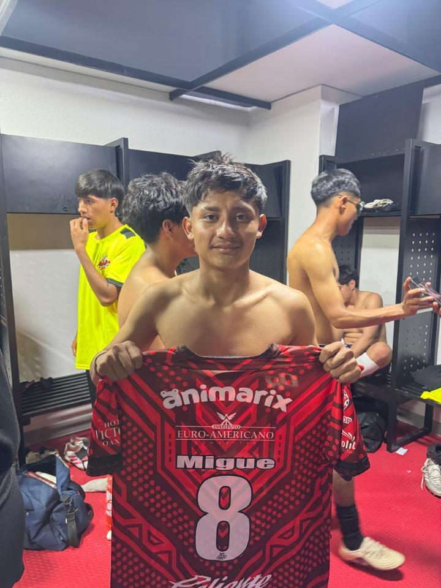
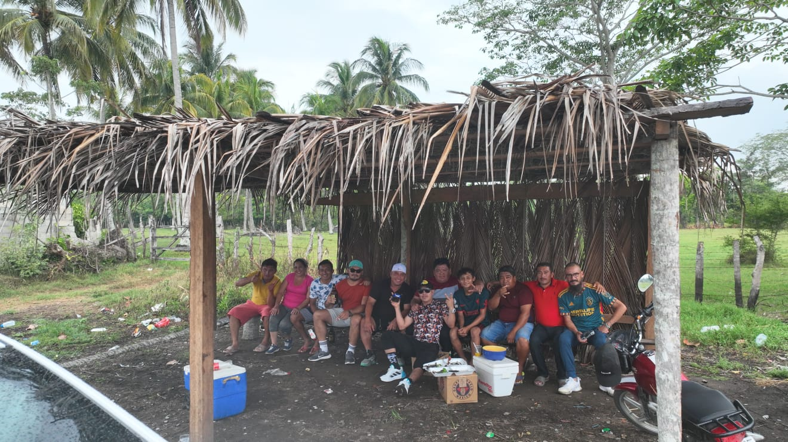
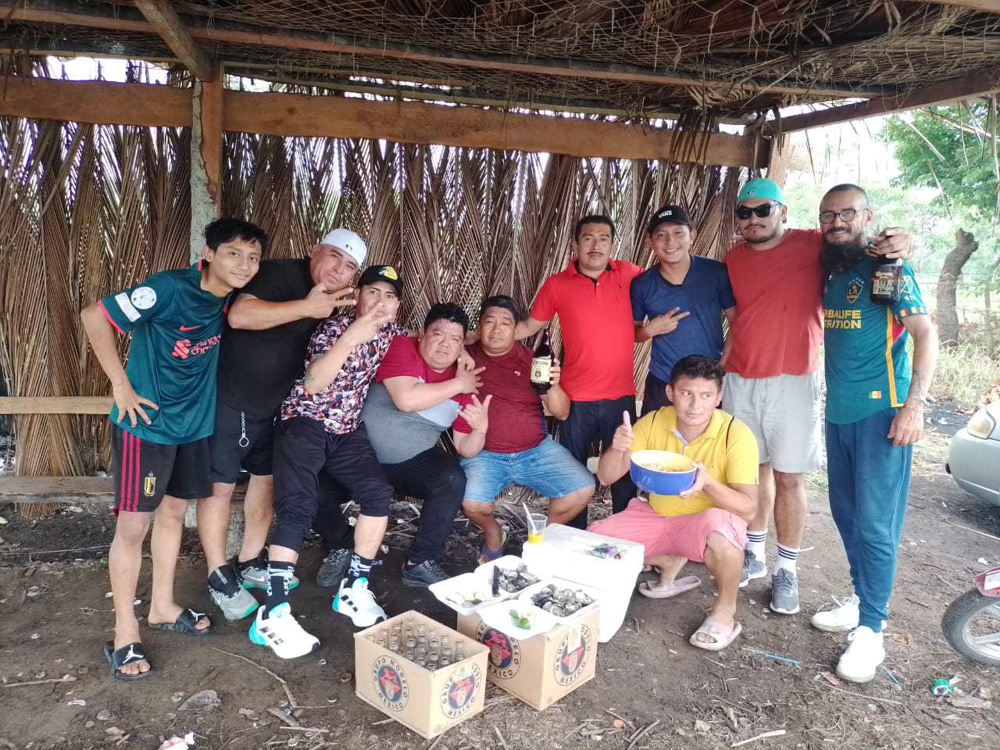

Futbolista mexicano
Volante por derecha o izquierda · Perfil derecho
Mi historia con el fútbol comenzó desde muy pequeño. Desde los 6 años empecé a jugar en las calles de Villa Cuauhtémoc, donde nació el sueño de algún día poder dedicarme al fútbol.
Con el paso de los años fui buscando oportunidades para demostrar lo que podía hacer. Una de las personas y equipos que me ayudaron en ese camino fueron los Deportivos Lobos de Zaragoza, un equipo del barrio que creyó en mí y me apoyó económicamente para poder asistir a pruebas y seguir buscando oportunidades.
También tuve que aprender desde muy joven lo que significa esforzarse. Comencé a trabajar desde los 12 años mientras continuaba persiguiendo mi sueño dentro del fútbol.
Después de diferentes experiencias y oportunidades, mi camino me llevó hasta Alebrijes, donde pude continuar creciendo como futbolista y acercarme cada vez más al sueño que comenzó jugando en las calles de mi pueblo.
Lobos de Zaragoza fue un equipo del barrio que me dio una oportunidad cuando más la necesitaba.
No fue solamente un equipo para mí, también fue parte importante del camino que me permitió seguir buscando mi sueño.
Recuerdo con agradecimiento el apoyo que recibí para poder asistir a pruebas y continuar intentando llegar más lejos en el fútbol.


El camino no siempre ha sido fácil. Uno de los momentos más complicados de mi carrera llegó cuando sufrí dos fisuras en el tobillo izquierdo, situación que me mantuvo aproximadamente ocho meses alejado del fútbol profesional.
Fueron meses difíciles tanto física como emocionalmente. Estar lejos de una cancha, de los entrenamientos y de aquello que más me gusta hacer fue un proceso complicado.
Cuando finalmente pude regresar, tuve que volver a enfrentar otro obstáculo. Hace aproximadamente un mes sufrí una distensión del ligamento colateral de la rodilla derecha.
Cada lesión me ha enseñado que regresar no significa solamente volver físicamente. También significa recuperar la confianza, tener paciencia y seguir creyendo cuando parece que el camino se hace más largo.
Hoy puedo decir que he superado cada uno de esos obstáculos y que sigo aquí, persiguiendo el mismo sueño que comenzó cuando era niño.
Toca una pregunta para abrir la respuesta.
Toca cada nombre para conocer su historia.
Mi mamá, Luz Albeyda Dionisio Jiménez, es una de las personas más importantes de mi vida y una parte fundamental de mi camino dentro del fútbol.
Desde que comencé a perseguir este sueño, ella ha estado conmigo en muchas de las etapas más importantes. Me ha apoyado cuando las cosas han salido bien, pero sobre todo cuando han llegado los momentos difíciles.
Muchas veces hizo esfuerzos para ayudarme a seguir adelante y buscar nuevas oportunidades. Su apoyo no solamente ha sido económico, también ha sido emocional.
Sus palabras, sus consejos y la confianza que siempre ha tenido en mí me han dado fuerzas para continuar.
Si hoy sigo persiguiendo mi sueño, una parte importante se la debo a mi mamá. ❤️
Zuri Elizabeth Flores Alamilla es una de las personas más importantes de mi vida y también forma parte de mi historia dentro y fuera del fútbol.
Desde jóvenes hemos compartido muchos momentos, sueños y etapas que han dejado una huella importante en mi vida. Durante momentos difíciles, cuando las cosas no salían como esperaba, ella estuvo ahí para escucharme, entenderme y darme su apoyo.
Con ella también llegué a imaginar un futuro juntos, formar nuestra propia familia y construir una vida compartiendo nuestros sueños.
Nuestra relación también ha pasado por momentos difíciles, pero cada etapa me ha dejado aprendizajes y recuerdos que forman parte de quien soy.
Zuri ocupa un lugar importante en mi historia. ❤️
Don Rudy fue una de las personas que más marcó mi vida. Para mí fue mucho más que alguien que me daba consejos. Fue como un segundo padre.
Creyó en mí desde una etapa importante de mi vida y siempre tuvo palabras que me ayudaron a seguir adelante.
Me hubiera gustado que pudiera verme continuar con mi sueño, regresar después de las lesiones y volver a pisar una cancha.
Aunque ya no está físicamente, sus enseñanzas, sus consejos y todo lo que viví con él siguen formando parte de mi historia.
Descansa en paz, Don Rudy. Siempre serás parte de mi camino. ❤️
Mi tío Julio ocupa un lugar muy especial en mi vida. Ha formado parte de mi historia desde que era pequeño y me enseñó muchas cosas que van más allá del fútbol.
Guardo muchos recuerdos y enseñanzas de los momentos que compartimos. Todo eso forma parte de la persona que soy actualmente y de la manera en que veo la vida.
Aunque ya no esté físicamente, las personas importantes nunca desaparecen completamente. Sus enseñanzas, sus recuerdos y todo lo que dejaron en nosotros continúan acompañándonos.
Mi tío Julio siempre será parte de mi historia. ❤️
Si quieres compartir mi página, puedes hacerlo desde aquí.
Sí. El sueño sigue.
Y ahora voy por más. ⚽🔥